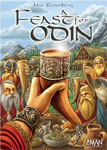

    <mat-card class="banner">
        
            <mat-card-content>
                <app-table></app-table>
            </mat-card-content>
    </mat-card>

    <mat-card class="game-table">
        <mat-card-header><mat-card-title>A Feast for Odin</mat-card-title></mat-card-header>
            
                <mat-card-content>
                    <mat-grid-list cols="1" rowHeight="50px">
                        <mat-grid-tile>
                            <div class="table-attribute">Maximum Players: 4</div>
                        </mat-grid-tile>
                        <mat-grid-tile>
                            <div class="table-attribute">Average Playtime: 150 minutes</div>
                        </mat-grid-tile>
                        <mat-grid-tile>
                            <div class="table-attribute">Mechanisms: Worker placement, Tile laying</div>
                        </mat-grid-tile>
                        <mat-grid-tile>
                            <div class="table-attribute">Players:</div>
                                <ul>
                                    <li>Jody Wells <button class="button-leave" color="accent" mat-raised-button>Leave</button></li>
                                </ul>
                        </mat-grid-tile>
                    </mat-grid-list>
                </mat-card-content>
    </mat-card>